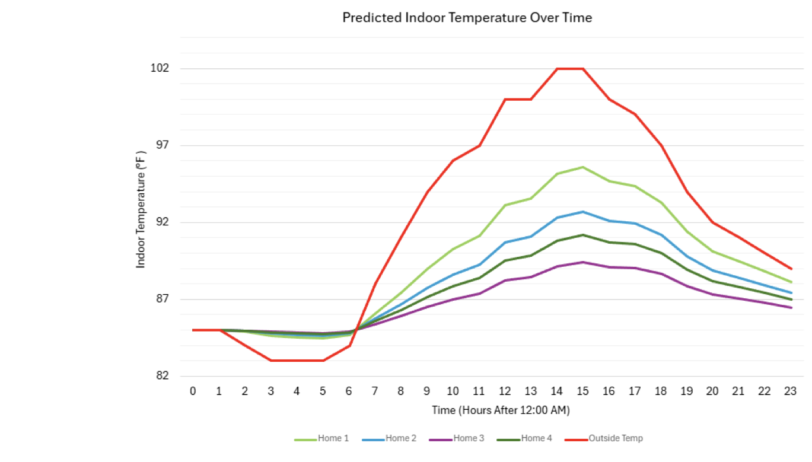
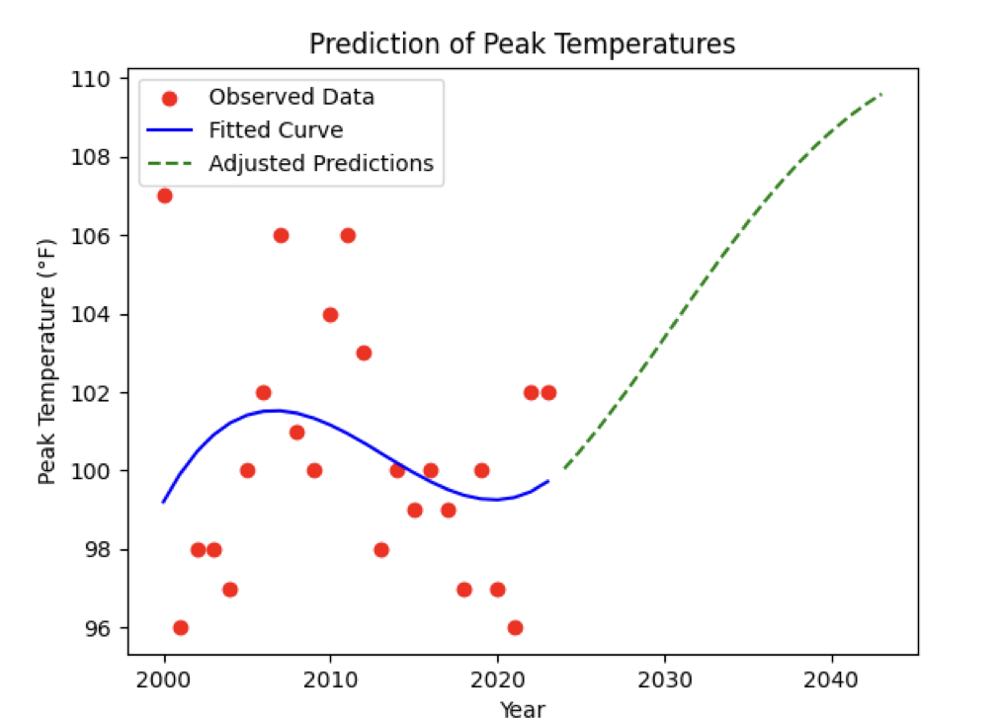
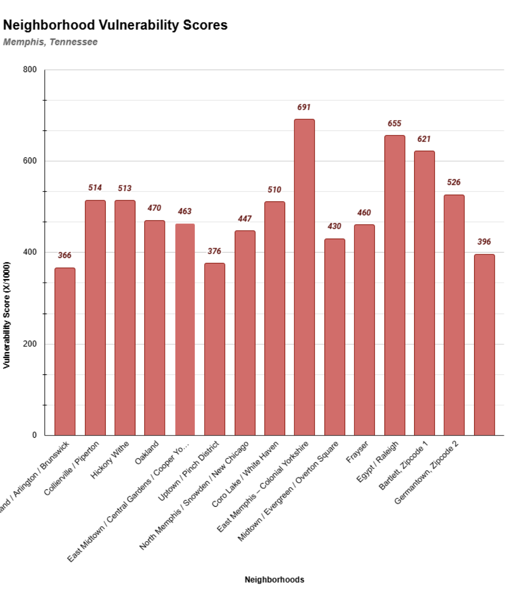

M3 Math Challenge 2025Modeling Extreme Heat in Memphis
- SIAM M3 Challenge · Triage Advancer (top ~17%)
- Role: Team Lead · five-person team
- Python
- scikit-learn
- Google Sheets
How can a city prepare for extreme heat, especially when rising temperatures put pressure on its electricity grid and the people who are most vulnerable? For the 2025 M3 Challenge, our team chose Memphis, Tennessee, and built three models to investigate that question.

What our models suggested
Indoor temperatures during a heat wave
Our first task was to predict how the temperature inside four different homes would change over 24 hours without air conditioning. Our results predicted that indoor temperatures would generally rise throughout the day, peak around 3 PM, and gradually decline afterward.
Method: Newton’s Law of HeatingHeat transfer, insulation, and sensitivity testing
We used Newton’s Law of Heating to model heat transfer between the outdoor environment and the inside of each home. The model accounted for differences in building materials and insulation, allowing us to compare how homes responded to the same outdoor temperatures.
We also tested how sensitive the model was to changes in the input temperatures by introducing small variations and comparing the resulting predictions.
Forecasting electricity demand
Next, we looked at how heat waves could affect Memphis’s electricity grid. Under our assumptions, we estimated that Memphis could see peak electricity demand of approximately 4,832 MW during a severe heat-wave scenario, and we projected how maximum temperatures and demand might change over the next 20 years.

Method: curve fitting in PythonHistorical consumption data and seasonal comparisons
Using historical electricity consumption data, we developed a logistic curve-fitting model in Python (with scikit-learn) to examine longer-term trends. We also compared seasonal electricity usage and temperatures to estimate how much additional electricity might be needed during extreme heat.
This part of the challenge introduced us to how hard it is to forecast real-world systems, especially when future technology, infrastructure, and policy decisions are unknown.
Identifying vulnerable neighborhoods
Our final task was to figure out which Memphis neighborhoods might be most vulnerable during a heat wave. Our model gave East Memphis the highest relative vulnerability score in our sample, at 691 out of 1,000, while the Lakeland–Arlington–Brunswick group received one of the lowest, at 366.

Method: a weighted vulnerability index11 factors, min-max normalization, weighted scoring
We collected and organized data for 15 neighborhoods or neighborhood groups, considering 11 factors related to demographics, infrastructure, economics, and environmental conditions. These included household income, building age, access to emergency resources, vulnerable populations, and power-grid reliability.
Since the factors used different units and scales, we applied min-max normalization to make them comparable. We then developed a weighted scoring system that placed greater emphasis on socioeconomic vulnerability.
The goal was to explore how quantitative models could help policymakers prioritize resources such as cooling centers, emergency assistance, and infrastructure improvements.
Assumptions and limits
Our predictions and vulnerability scores were estimates based on simplified models, not validated measurements of future conditions. In particular, our neighborhood rankings depended on the data and weights we selected. One of the hardest parts was deciding which assumptions were reasonable when complete data wasn’t available, and balancing model complexity against our limited time.
What I learned
This challenge showed me how mathematical modeling connects concepts from physics, statistics, computer science, and public policy. It was a valuable introduction to building models for messy, real-world problems where there isn’t always one correct answer.